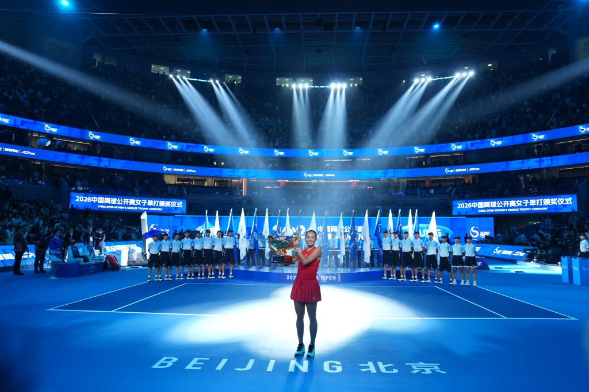
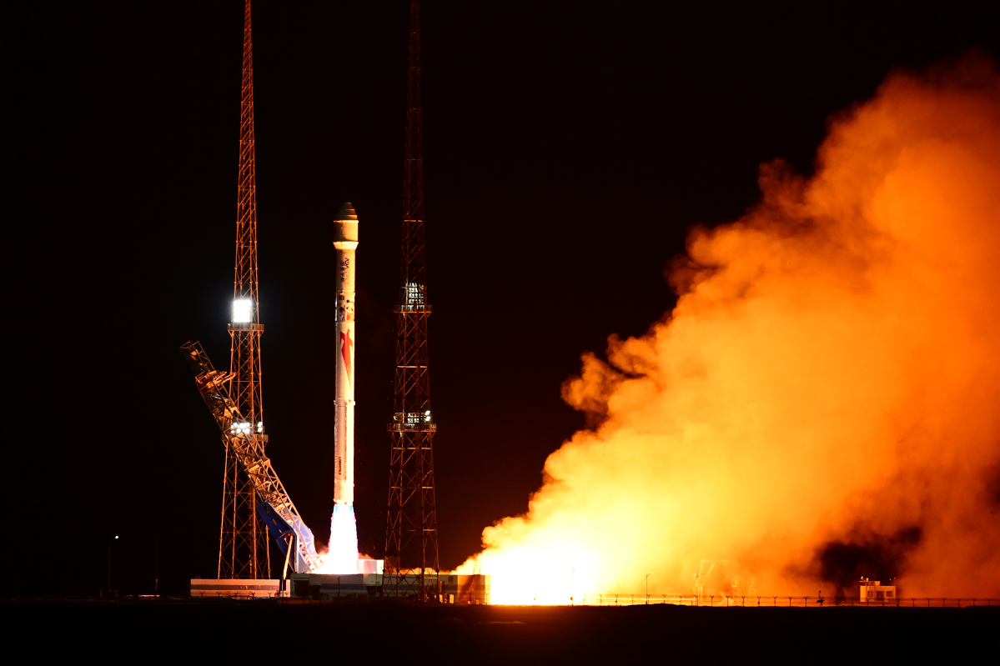
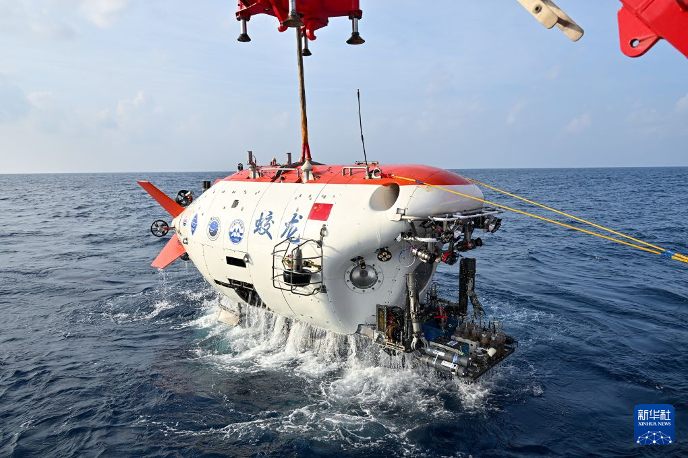

1 / 3网球场上的冠军

郑钦文首夺中网冠军
10月11日，郑钦文在北京拿到中国网球公开赛女单冠军。
她连赢7场比赛，第一次举起WTA1000级别的奖杯。
坚持练习就能离梦想更近。

10月11日，郑钦文在北京拿到中国网球公开赛女单冠军。
她连赢7场比赛，第一次举起WTA1000级别的奖杯。
坚持练习就能离梦想更近。

10月14日晚上，朱雀二号火箭带着10颗卫星一起飞向太空。
这些卫星会在太空里帮忙做计算和通信。
火箭可以把很多卫星一起送到太空，让我们的生活更方便。

蛟龙号潜水器下潜到4400米深的海底，带回了石头、泥巴和海水。
科学家还在海底发现了一块蓝色塑料片，提醒大家要爱护海洋。
深海里有很多秘密，我们也要保护海洋不被垃圾污染。